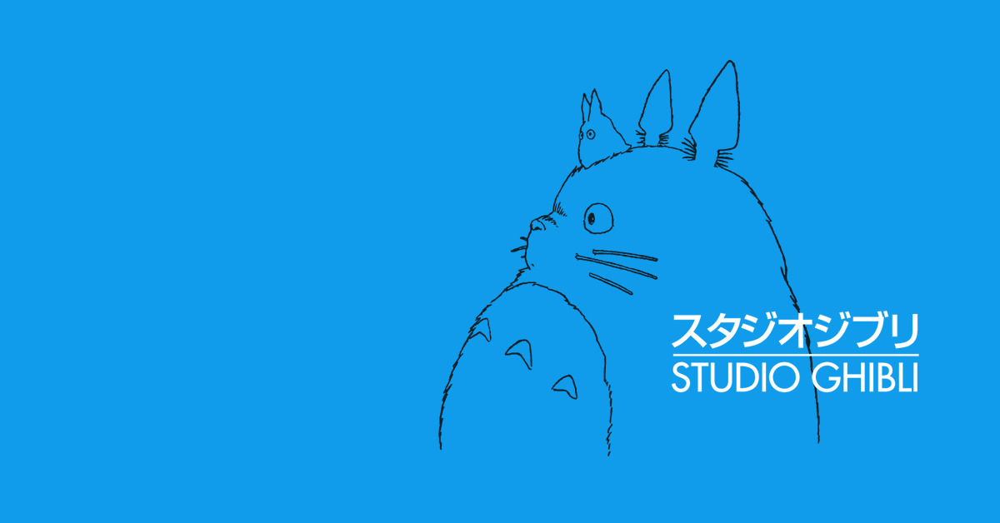

지브리 스튜디오
[신상]
[명칭의 유래]
[작품의 특징]
[수상내역]
[역대 흥행 TOP5]
- 스튜디오 지브리
- 기업명 : 정식: 株式会社スタジオジブリ
영어: Studio Ghibli Inc.
한글: 주식회사 스튜디오 지브리
- 국가 : 일본
- 전신 : 톱 크래프트 스튜디오
- 설립일 : 1985년 6월 15일
- 설립자 : 미야자키 하야오, 타카하타 이사오, 스즈키 토시오
위로
- 명칭의 유래
사명인 지브리는(GHIBLI)는 '사하라 사막에 부는 열풍'을 가리키는 이탈리아어다.
2차대전 당시 이탈리아 군용정찰기에 붙은 명칭이자 마세라티 기블리의 유례이기도 하다.
지브리는 자타가 공인하는 비행기 오타구 미야자키 하야오가 붙였으며,
'애니메이션 업계에 선풍을 불러일으키자'라는 의미로 스튜디오 이름을 지었다고 한다.
원래 발음은 기블리(일어로는 기브리)로 지브리는 미야자키가 발음을 혼동하다가 실수로
읽은 명칭에서 유래가 됐다.
미야카지 본인도 기브리가 맞는 발음이라 인정했으나, 사람들 사이에서는 이미 지브리로 널리 알려져 있어,
사명 변경 없이 현재에 이르고 있다.
위로
- 작품의 특징
성우로 배우, 가수, 작곡가, 기자 등 전문 애니메이션 더빙과는 거리가 먼 사람들을 캐스팅한다.
이런 독특한 성우 캐스팅 방식은 이웃집 토토로 제작 당시 전문 성우들은 교과서적인 연기로 오디션을 봤는데
미야자키 감독이 그들을 전부 퇴짜놓고 직접 캐스팅을 하기 시작한 것이 계기가 되었다.
즉, 지브리는 캐릭터를 연기하는 성우가 아닌 캐릭터 그 자체를 원하는 경향을 보인다.
그림체가 주류 애니메이션의 그림체와 차이가 많이 나는데, 선이 깔끔한 것 보다는 서정적인 느낌이 조금씩 난다.
붉은 돼지나 모노노케 히메 등에서 자연풍광을 보면 이런 특징을 잘 확인 할 수 있는데, 일본에서는 이런 그림체를 '서정화'라고 부른다.
이런 그림체는 세월의 흐름을 덜 타는 편이기에 나온지 20년이 넘은 '이웃집 토토로'와 같은 작품이 아직까지 사람 받을 수 있게 해주는 큰 이유 중 하나이다.
반면 이런 그림체는 새로 나온 영화도 옛 영화처럼 보이게 해주는 단점도 존재하지만 잠깐 스쳐가면서 보더라도 지브리 작품임을 알 수 있게 해주는 큰 특징이다.
거의 모든 작품들의 주인공이 여성이며, 여성성을 부각하는 것이 아닌 기존 여주인공들의 고정관념을 깨부수는 작품을 많이 내놓는다.
위로
- 수상내역
1991년 일본 현지 아카데미 화제상: 추억은 방울방울
2002년 베를린 국제 영화제 황금곰상: 센과 치히로의 행방불명
2002년 전미비평가 협회상 장편 애니메이션 부분: 센과 치히로의 행방불명
2003년 아카데미상 장편 애니메이션 작품상: 센과 치히로의 행방불명
2006년 일본 아카데미상 우수 애니메이션 작품상: 게드전기
위로
- 역대 흥행 TOP5
1위. 센과 치히로의 행방불명 (2001)
2위. 하울의 움직이는 성 (2004)
3위. 모노노케 히메 (1997)
4위. 벼랑 위의 포뇨 (2007)
5위. 바람이 분다 (2013)
위로